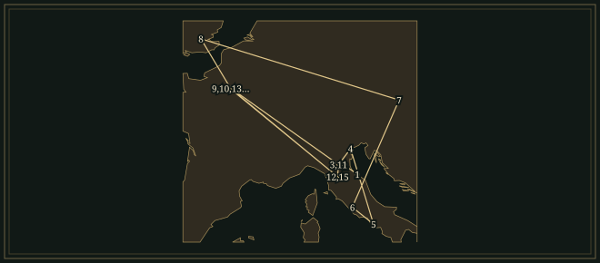
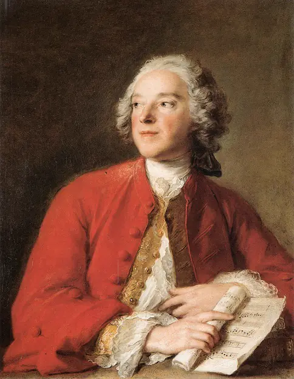

GioachinoRossini
Composer known for ensembles of quarrelling characters sung with clockwork precision, and for the orchestral depiction of mountains and storms in William Tell.
- Trained
- Lugo with Giuseppe Malerbi; Bologna Liceo Musicale from 1806, including counterpoint with Stanislao Mattei
- Theatres
- Venice and Milan · Naples under Domenico Barbaja · Rome · Théâtre-Italien and Opéra, Paris
- Turning points
- Tancredi and L’italiana in Algeri 1813 · The Barber of Seville 1816 · Guillaume Tell 1829
- After the stage
- Stabat Mater · songs and piano pieces called Péchés de vieillesse · Petite messe solennelle
“I was born for comic opera, as you well know!”
Life
On 20 February 1816, at Rome’s Teatro Argentina, a barber came on stage announcing that everyone needed him. Figaro could shave a chin, deliver a letter and arrange a marriage, and he called out his own name so many times that the part tested even his singer. The opera was advertised as Almaviva, ossia L’inutile precauzione. Its first night failed. Within a few performances the public had changed its mind about Rossini’s Barber of Seville.
1792–1813A child in the theatre
Gioachino Rossini was born in Pesaro on 29 February 1792. His father Giuseppe played horn and trumpet; his mother Anna Guidarini became a professional singer. The boy travelled with them as they worked. In Lugo, from 1802, the priest Giuseppe Malerbi taught him composition and introduced him to Haydn and Mozart. At Bologna’s Liceo Musicale, which he entered in 1806, Rossini studied cello, piano and counterpoint. Before he composed operas he worked in the theatre as a musician, singer and keyboard player.
His first staged opera, La cambiale di matrimonio, opened at Venice’s Teatro San Moisè in November 1810. During 1812 five new operas followed, alongside the première of the earlier Demetrio e Polibio. In 1813 Venice heard both the serious Tancredi and the comic L’italiana in Algeri. At the end of the latter’s first act, the characters describe the noises inside their heads: bells, a cannon, a crow, a hammer. Rossini set the syllables against one another.
1815–22Colbran and Naples
In 1815 the impresario Domenico Barbaja brought Rossini to Naples. The soprano Isabella Colbran sang the title role in his first opera for the San Carlo, Elisabetta regina d’Inghilterra. In Naples he had singers for serious drama as well as comedy. Colbran sang Desdemona in Otello, Armida, and Elena in La donna del lago; she and Rossini married in 1822. He wrote these operas for particular singers, to suit the breath, leaps and long runs of notes they could command.
In the last act of Otello, Desdemona hears a gondolier outside her room. His song recalls a friend of hers who died for love. She sings her own lament and prays before going to bed, and a storm gathers. Rossini set the gondolier’s distant voice, Desdemona’s solo and the storm as a single scene.
1816–17Rosina has written the letter
Rossini wrote The Barber during a Roman engagement away from Naples. Cesare Sterbini adapted Beaumarchais’s comedy, already the basis of a celebrated opera by Giovanni Paisiello. The preface to the new libretto explained the respectful change of title to Almaviva. The Count needs Figaro to reach Rosina, whose guardian Bartolo intends to marry her himself. Disguised first as a drunken soldier and then as a singing teacher, the Count causes progressively greater trouble inside the house.
In her cavatina, Una voce poco fa, Rosina describes herself as obedient, then promises to become a viper if crossed. Rossini wrote the part for the contralto Geltrude Righetti-Giorgi, and the cavatina is full of runs and trills. Later, when Figaro offers to help her send a letter, she produces one she has already written.
The first-act finale stops the household in astonishment when the police officer recognises the Count and declines to arrest him. The characters sing that they are frozen like statues. The music then moves again, and they compare their heads to a forge full of hammers. Rossini stretched one moment of bewilderment across the whole ensemble, then drove everyone towards the curtain in short, repeated phrases.
A year later Righetti-Giorgi created the heroine of La Cenerentola at Rome’s Teatro Valle. In Jacopo Ferretti’s version of the Cinderella story a philosopher arranges her rescue, and the prince recognises her by a pair of bracelets. When master and servant drop their disguises, six singers describe an impossible knot in an ensemble of repeated consonants and overlapping entries. At the end of the opera Angelina forgives the family who treated her as a servant.
1823–29From Venice to the Alps
Semiramide, written for Venice in 1823, was Rossini’s last opera for an Italian theatre. Colbran sang the title role, an Assyrian queen whose intended bridegroom turns out to be her son. After London, Rossini took charge of music and staging at the Théâtre-Italien in Paris in 1824. He celebrated Charles X’s coronation with Il viaggio a Reims, and later reused much of its music in the French comedy Le Comte Ory, the story of a count who disguises himself as a female pilgrim.
On 3 August 1829 the Paris Opéra presented Guillaume Tell, after Schiller’s play about Swiss resistance to Austrian rule. Its overture begins with five solo cellos. A storm follows; afterwards a cor anglais plays a herdsman’s call, with flute decorations around it. The familiar gallop comes last. In the opera a father has to shoot an apple from his son’s head, and the representatives of the cantons gather to swear an oath.
1829–68Thirty-nine years after Tell
Rossini was thirty-seven when Tell opened. He never completed another opera. A dispute over his French pension went on for years, and he suffered from physical illness and nervous complaints while living between Paris, Bologna and Florence. He finished the Stabat Mater in 1841, replacing music that Giovanni Tadolini had supplied for its earlier version. After Colbran’s death he married Olympe Pélissier in 1846. In 1855 they moved back to Paris, where his health improved and he began to compose again.
He called the late songs and piano pieces Péchés de vieillesse (sins of old age) and offered them to his salon guests. In 1863 he wrote the Petite messe solennelle for voices, two pianos and harmonium. At the end of the score he addressed God: “I was born for comic opera, as you well know!” The first private performance took place in the Paris home of the Countess Pillet-Will on 14 March 1864. Rossini died at Passy on 13 November 1868. In 1887 his remains were taken to Santa Croce in Florence.
Places

All 15 places, with sources
- Pesaro · 1792-02-29 · born
Born to Giuseppe Rossini, a horn and trumpet player, and Anna Guidarini, later a professional singer.
- Lugo · 1802 · studied
The family moved to Lugo; Giuseppe Malerbi taught him figured bass and composition.
- Bologna · 1806-04-14 · studied
Enrolled at the Liceo Musicale in piano and cello; later studied counterpoint with Stanislao Mattei.
- Venice — Teatro San Moisè · 1810-11-03 · premiere
His first staged opera opened at the Teatro San Moisè. La cambiale di matrimonio.
- Naples · 1815–1822 · worked
Engaged by Domenico Barbaja for the royal theatres. This period includes Elisabetta regina d’Inghilterra, Otello, Armida, La donna del lago and Zelmira, with engagements elsewhere between productions.
- Rome — Teatro Argentina · 1816-02-20 · premiere
The opera opened under the title Almaviva, ossia L’inutile precauzione. Its first-night failure was followed by success. Il barbiere di Siviglia.
Rossini Opera Festival — chronology, 1816 · Rossini Opera Festival — Il barbiere di Siviglia
- Vienna · 1822 · travelled
Travelled with Isabella Colbran and the San Carlo company; Zelmira was performed at the Kärntnertortheater on 13 April. Zelmira.
- London · 1823–1824 · worked
Invited by the King’s Theatre management to direct his operas and write a new one; the planned Ugo, re d’Italia was abandoned after the management failed.
- Paris · 1824-11-26 · worked
Appointed director of music and staging at the Théâtre-Italien.
- Paris — Salle Le Peletier · 1829-08-03 · premiere
The Paris Opéra presented his final completed opera, in four acts and in French. Guillaume Tell.
Rossini Opera Festival — Guillaume Tell · BnF stage-design record via Commons — Paris, Opéra-Le Peletier, 3 August 1829
- Bologna · 1839-04 · worked
Accepted appointment as permanent consultant to the Liceo Musicale.
- Florence · 1850–1855 · lived
Prepared a permanent residence in Florence in 1850; left for Paris at the end of April 1855.
- Paris · 1855–1868 · lived
Returned with Olympe Pélissier. Their Paris home and villa at Passy became meeting places for musicians. He wrote the late Péchés de vieillesse and the Petite messe solennelle.
- Passy, Paris · 1868-11-13 · died
Died at his villa in Passy; his first burial was at Père Lachaise.
- Santa Croce, Florence · 1887-05-03 · buried
His remains were reburied in Santa Croce after transfer from Paris.
Influences
Teachers, encounters and borrowed music, each with its account and sources in the Web of Influence.
Influences received
The Sound
𝄞The crescendo
A short phrase can grow louder while its tune stays the same. In the Barber overture Rossini repeats a pattern, beginning quietly and building towards the full orchestra. Basilio’s La calunnia uses the same device in a scene with a story: in the text, slander begins as a breeze and ends as an explosion.
♪Coloratura
A single syllable can carry a whole run of notes. In Rosina’s Una voce poco fa, in E major, her lines about obedience are set with elaborate runs. When she threatens to become a viper, the violins play pizzicato beneath her and quick notes wind around the words.
𝄋Ensembles
In the sextet from La Cenerentola, Questo è un nodo avviluppato, the voices take up the tangled words in successive entries. In the first-act finale of L’italiana in Algeri, imitations of bells, hammer-blows and crow-calls are set as interlocking vocal parts.
♮Orchestral soloists
The Guillaume Tell overture opens with five solo cellos, and the full orchestra enters with the storm. In the pastoral section the cor anglais plays with a flute above it.
𝄐Music used twice
The Barber overture had already been used for two serious operas. Large stretches of Il viaggio a Reims were reused in Le Comte Ory, set to new words and placed in new situations, with their rhythms and melodic shapes still recognisable.
Works
A selection from the composer’s works.
- 1810La cambiale di matrimonioComic opera in one actThe eighteen-year-old’s first staged opera, at Venice’s Teatro San Moisè. It came before the larger comedies.
- 1813TancrediSerious opera in two actsA knight returns to Syracuse, where his love becomes bound up with accusations of treason. One of the two Venetian successes that established Rossini in 1813.
- 1813L’italiana in AlgeriComic opera in two actsIsabella overturns Mustafà’s plans. In the first-act finale the characters’ bewilderment is set to imitations of bells, hammer-blows, cannon-fire and a crow.
- 1815Elisabetta regina d’InghilterraSerious opera in two actsRossini’s first opera for Naples, with Isabella Colbran as Elizabeth I. Its overture was later used for The Barber of Seville.
- 1816Il barbiere di SivigliaComic opera in two actsCesare Sterbini’s libretto, after Beaumarchais, centres on a barber and a resourceful young woman. The tenor appears in two disguises.Recordings in the Hall
- 1816OtelloSerious opera in three actsDesdemona’s last act runs from a gondolier’s distant song to lament, prayer and murder during a storm. Colbran created the role.
- 1817La CenerentolaComic opera in two actsThe Cinderella story, with a philosopher, a prince in disguise and a pair of matching bracelets. A sextet of bewilderment comes before Angelina’s forgiveness.
- 1817La gazza ladraOpera semiseria in two actsWritten for La Scala, a work that combines domestic comedy with the threat of catastrophe. Its overture is also performed on its own in concerts.
- 1819La donna del lagoOpera in two actsScott’s The Lady of the Lake brought to Naples. Elena crosses Loch Katrine, a king goes disguised, and rival armies close in.
- 1823SemiramideTragic opera in two actsAfter Voltaire: an Assyrian queen, a murdered king’s ghost and a son returning under another name. Rossini’s last opera for the Italian stage.
- 1828Le Comte OryFrench comic opera in two actsA count and his companions disguise themselves as female pilgrims. Music first written for a royal coronation was reused here in a far less respectable setting.
- 1829Guillaume TellFrench opera in four actsSwiss resistance, after Schiller. The overture leads into a drama of family, landscape and collective revolt.Recordings in the Hall
- 1832–41Stabat MaterFour solo voices, chorus and orchestraBegun for a Spanish commission; Rossini completed his own setting in 1841, replacing Tadolini’s contributions to the earlier version.
- 1863Petite messe solennelleSolo voices, chorus, two pianos and harmonium; later orchestratedThe original scoring was for chamber forces. At the end of his manuscript the composer asked God for admission to Paradise.
In the Score
Short examples, engraved and playable.
The Rossini crescendo — schematicPhrase and sound
Coloratura — schematicPlain line with added quick notes
Sister Arts


Beaumarchais’s Le Barbier de Séville (1775) supplied Rossini and Sterbini with Figaro, Rosina and the Count. The portrait dates from twenty years before the play.

Cicéri’s design belongs to the Paris Opéra production of 3 August 1829. In Tell, mountains, settlements and water shape the action. The chorus gathers in the landscape, and the storm gives Tell his chance to escape.
Recommended recordings
- Il barbiere di SivigliaTeresa Berganza, Hermann Prey, Luigi Alva; Ambrosian Opera Chorus, London Symphony Orchestra, Claudio AbbadoDeutsche GrammophonThe first complete Barber to own. Berganza sings Rosina with poise and agility, and Abbado keeps the ensembles moving forwards.
- La CenerentolaTeresa Berganza, Luigi Alva, Renato Capecchi, Paolo Montarsolo; Scottish Opera Chorus, London Symphony Orchestra, Claudio AbbadoDeutsche GrammophonBerganza sings Angelina with a warm tone and a light voice. The comic men have time to put the words across, and the sextet holds together.
- Guglielmo Tell — Italian versionSherrill Milnes, Luciano Pavarotti, Mirella Freni, Nicolai Ghiaurov; Ambrosian Opera Chorus, National Philharmonic Orchestra, Riccardo ChaillyDeccaThe Italian version, with a strong cast and Pavarotti as Arnold. A recording that leads listeners beyond the overture into the opera’s long-phrased vocal writing.
Where to hear more
- Il barbiere di Siviglia — complete opera1816Teresa Berganza, Hermann Prey, Luigi Alva, Enzo Dara, Paolo Montarsolo; Ambrosian Opera Chorus; London Symphony Orchestra; Claudio Abbado · Deutsche Grammophon · September 1971, Watford Town Hall
Ruffo’s Figaro and the overture in the Hall come from a much larger comedy. The complete opera also has Berganza’s Rosina, the duets in which the plot is laid, and the first-act finale, where the characters’ separate anxieties combine in a single rhythmic ensemble. Abbado gives the ensemble room to articulate every syllable and keeps the action moving.
- Guglielmo Tell — complete opera, Italian version1829Sherrill Milnes, Luciano Pavarotti, Mirella Freni, Nicolai Ghiaurov; Ambrosian Opera Chorus; National Philharmonic Orchestra; Riccardo Chailly · Decca · 1978–79, Kingsway Hall, London
The overture does not include Tell’s ordeal as a father or Arnold’s divided loyalties, which belong to the full opera. This recording, with Milnes, Pavarotti and Freni, uses the Italian translation in place of Rossini’s original French text. Pavarotti sings Arnold.
These recordings are under copyright, so the Hall cannot play them; the links go to the labels’ and artists’ own uploads and to streaming services.
Lineage
Further reading
- Richard Osborne, Rossini: His Life and Works, 2nd ed. (Oxford University Press, 2007).biography and work study
Osborne covered the whole career and its music, including the decades after William Tell and the place of the serious operas beside the comedies.
- Emanuele Senici, ed., The Cambridge Companion to Rossini (Cambridge University Press, 2004).essay collection
The book examines how these operas were assembled for particular theatres and singers, with chapters on librettos, compositional methods, ornamentation, staging and editing.
- Philip Gossett, Divas and Scholars: Performing Italian Opera (University of Chicago Press, 2006).performance and textual study
Gossett discusses the editorial decisions that shape a Rossini performance: which version to perform, what to cut and how far a singer may ornament.
- Fausto Petrella, ‘Spazio artistico e umorismo in musica. Il comico musicale e i suoi rapporti con il Witz’, De Musica 7 (2003).article
Section VIII examines how strictly organised singing in ensembles from The Barber of Seville, La Cenerentola and L’italiana in Algeri can sound like collective confusion. In Italian.
Cite this page
Contrapunctus. “Gioachino Rossini.” Accessed 19 October 2026. https://mottopanikeiku.github.io/contrapunctus/composers/rossini.html.
@misc{contrapunctus-composers-rossini,
author = {{Contrapunctus}},
title = {Gioachino Rossini},
howpublished = {\url{https://mottopanikeiku.github.io/contrapunctus/composers/rossini.html}},
note = {Accessed 2026-10-19}
}